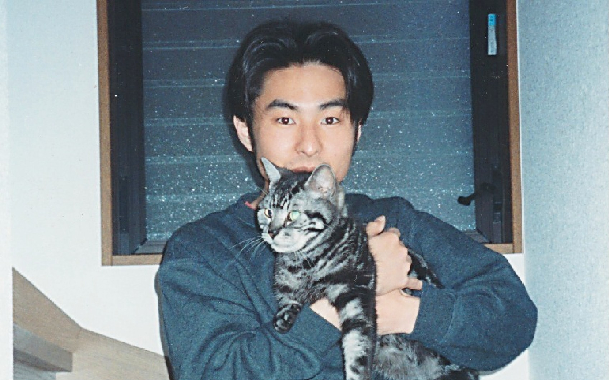
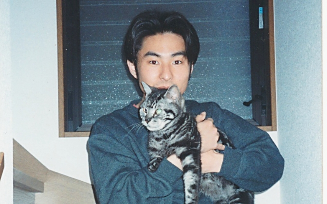
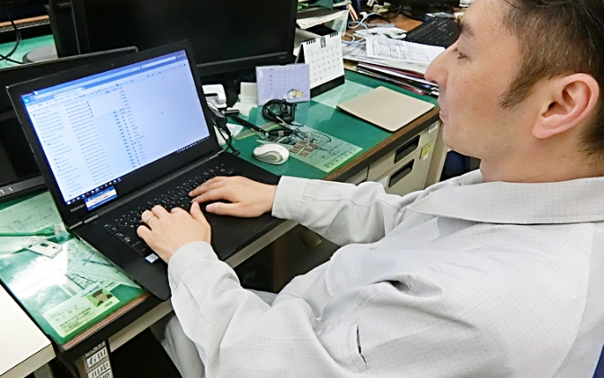
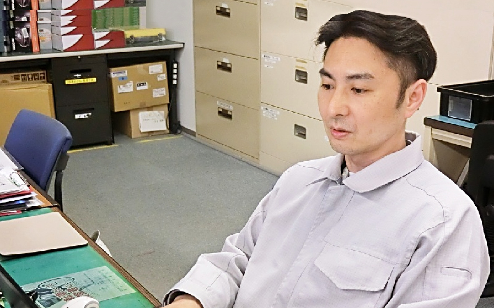
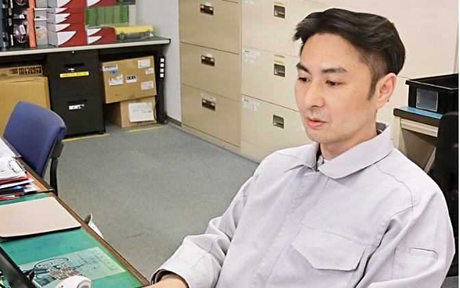

毛利 敏宏が働き始めたのはWindows95が発売されたパソコンブームの最中。高校は普通科でしたがプログラミングに熱中し、現在は半導体メーカーの技術者として、20年以上活躍しています。まったくの未経験にもかかわらず、興味のある分野で才能を発揮できたのは、旭化成アミダスとの出会いがきっかけでした。
プログラミングへの好奇心が、
新たな仕事の可能性を広げるきっかけに

毛利は、現在、半導体の製造販売を行う企業で、エンジニアや設計者のサポートをする業務に就いています。旭化成アミダスからの派遣という形で、もう20年になります。
最初に就職したのは自動車メーカーでした。溶接や板金に関する業務に携わりますが、くしくも毛利が入社した1995年は、Windows95が発売された歴史的な年。インターネットやパソコンが一気に流行ったころです。普通科を卒業した毛利は、専門外でしたが、プログラミングに強く引かれていきました。
「僕の家にもパソコンがありました。遊びでいろいろ触ったりしていましたね。もともと興味があったし、プログラミングができれば人材として重宝されるのではとも思って、当時は独学でプログラミングを勉強しました」
そんな毛利の仕事人生において大きな転機となったのは、入社して約3年が経ったころのことでした。
現在、毛利が派遣されている半導体メーカーで働く知人から「自分が勤める会社で一緒に働いてみないか」と声が掛かったのです。その会社は、ちょうど人員の入れ替わりで、新たな人材を求めていた時期でした。
「まったくの未経験者でしたが、電子機器やプログラミングに興味もあったし、『旭化成』という会社の信用もあったので、それならとその話を受けました」
旭化成アミダスに入社した2000年。ここから、毛利の新たな世界が広がり始めたのです。
雑談で言った自分の言葉を
覚えてくれていた。
好きな分野が仕事に
楽観的な方なので、未経験でも仕事への不安はあまりなかった──。
もともとの気質から悩まない方だと毛利は言いますが、未経験であっても仕事をしやすい、恵まれた環境であることに気づきます。毛利が最初に所属したのは、半導体の試作品を検査する部署でした。LSIテスターという特殊なコンピュータを使って、不良品がないか、量産できるかのシミュレーションを行うのです。
「まったく初めてでしたが、教えてくれる先輩方やいっしょに仕事をする職場の方々に非常に恵まれたので、難しいと悩むことはありませんでした。仕事以外でも先輩や同僚とはよく話す機会があります。そんな雑談の中で自然に業務について教えてもらうことも多かったですね」
周囲のサポートを受け順調に技術を身につけ成長する毛利。10年ほど過ぎたころ、突然、上司から告げられます。
プログラミングを組んでシステムを動かすような仕事をやってみないか――。
そう、毛利が最も興味のあるプログラミングでした。
「あまり覚えていないのですが、とても唐突だった気がしますね。でも、今思い返すと、職場はみんな仲良くて本当によく話をするので、僕が『プログラミングがやりたい』と話していたのかもしれません。それを上司が覚えていてくださったのかなと思います。おかげで業務の幅も広がりました」
さらに毛利は、上司のすすめで2019年には品質管理の資格を取得します。所属するチームで、一番乗りでした。本来は2020年3月に資格試験が実施され、社内メンバーも受験の予定でしたが、コロナ禍で試験は中止。現在、有資格者は毛利のみとなってしまいました。そのため毛利が中心になり資格取得希望者向けに社内勉強会も開催しています。
「それまではパワーポイントをほとんど使ったことがなかったのですが、勉強会の資料づくりのために徹底的に活用しました。実は、それ自体も楽しかったんです。子どものころから、なんでも新しいことに興味があって、やりたい方です。部活動も野球やバスケットボール、サッカーとかいろいろやりたい。1つのことに長く続かないタイプなんです（笑）」
そんな毛利にとって、旭化成アミダスに入社してからの20年は「あっという間」でした。
仕事をする上で“人”に恵まれ、働く上で“環境”に恵まれた
「長く続けてこられたのは、業務内容が楽しかったこともあります。仕事ってやり始めると奥が深い。それを追求していくのが楽しいんですね。それに周りの人が本当に良くしてくれたからだと思います。でないと、この僕がこんなに長く続けてられなかった」
毛利が「恵まれた」と言うのは、派遣先である企業と、派遣元である旭化成アミダスの2つの環境を指します。
「派遣先の上司にいつも感じるのは、マイナスの部分を指摘するというより、プラスの部分をいつも評価してくれているということです。もちろん『もっと頑張ってほしい』と言われることもありますが、『ここは、すごく良かった』という部分を見てくれていて、必ず言葉にして伝えてくれます。モチベーションが上がりますよね」
また、働く環境をサポートしてくれる旭化成アミダスについて印象的なのは、東日本大震災後のエピソードです。
「震災後、当時働いていたビルに、ヒビが入るなど破損があったり、停電があったり、出社がままならない状況が続きました。コロナの影響下の今の状況と似ているかもしれませんが、働けないと生活にも影響しますから、みな不安ですよね。そんなとき旭化成アミダス側の主導で話し合いの場がつくられ、いろんな工夫の中仕事をできる環境を整えてくれました。仕事をする上でのフォロー体制が手厚いと感じます。これは今も印象に残っていますね」
2020年現在、毛利が取り組んでいるのは業務マニュアルの作成です。毛利のように未経験で入社した人でも見ればわかる、難なく業務をこなせるようなマニュアルを目指しています。マニュアルしかり、今では毛利自身が若い人に教える機会が増えました。
「僕は若くして入社したから、最初のころは言葉遣いも挨拶さえもできてなかったと思うし、それで先輩方に迷惑をかけたこともあると思います。でも丁寧に指導してくださった。そうしたものを若い人たちに返していきたいですね」
入社20年が経っても、
新しいチャレンジへの想いは止まらない

これからチャレンジしたいことはたくさんあると毛利は言います。
「僕らの業務では、課題を1つづつ出していくと、すごくたくさんあると思うんです。まだまだ経験していないことはたくさんありますね。今後は、難しいことにもっとチャレンジしていきたいです。失敗しても責められるような社風もありませんから。『できるか、できないか』のギリギリのところを攻めていきたい（笑）」
なんにでも興味津々の毛利が、今一番気になっているのは、人工知能です。
「今年度の目標は、人工知能も構築できるPythonという言語で新しいテストプログラムをつくることなので、勉強を進めています。人工知能自体は目標というわけではないですが、Pythonを学ぶことで、人工知能についてもいろいろやってみることはできそうだなと思っています。それができれば、たとえば自分の業務を自動化するとか、仕事を効率化してラクにできるプログラムなんかもできるかもと考えています」
教える、教えられる、そのどちらの能力も育てることができ、いろんなことにチャレンジできる環境――。そんな中で、どんどん新しい発想やチャレンジの想いがあふれる毛利は、未知なるキャリアを着々と築いています。
見出し見出し見出し見出し見出し見出し
見出し見出し見出し見出し見出し見出し
本文テキスト本文テキスト本文テキスト本文テキスト本文テキスト本文テキスト本文テキスト本文テキスト本文テキスト本文テキスト本文テキスト本文テキスト本文テキスト本文テキスト本文テキスト本文テキスト本文テキスト本文テキスト本文テキスト本文テキスト本文テキスト本文テキスト本文テキスト本文テキスト本文テキスト本文テキスト本文テキスト本文テキスト本文テキスト本文テキスト本文テキスト本文テキスト本文テキスト本文テキスト本文テキスト本文テキスト本文テキスト本文テキスト本文テキスト本文テキスト本文テキスト本文テキスト本文テキスト本文テキスト本文テキスト本文テキスト本文テキスト本文テキスト本文テキスト本文テキスト本文テキスト
本文テキスト本文テキスト本文テキスト本文テキスト本文テキスト本文テキスト本文テキスト本文テキスト本文テキスト本文テキスト本文テキスト本文テキスト本文テキスト本文テキスト本文テキスト本文テキスト本文テキスト本文テキスト本文テキスト本文テキスト本文テキスト本文テキスト本文テキスト本文テキスト本文テキスト本文テキスト本文テキスト本文テキスト本文テキスト本文テキスト本文テキスト本文テキスト本文テキスト本文テキスト本文テキスト本文テキスト本文テキスト本文テキスト本文テキスト本文テキスト本文テキスト本文テキスト本文テキスト本文テキスト本文テキスト本文テキスト本文テキスト本文テキスト本文テキスト本文テキスト本文テキスト